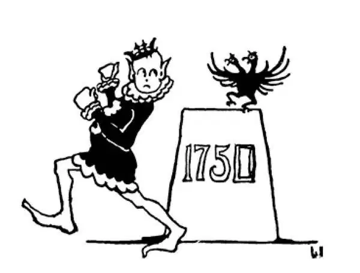

74
A Prince Who Ran Away
逃跑的王子

IF you put a P in front of Russia it makes—Prussia. This was the name of a little country in Europe that was later a part of Germany. Russia was big, and Peter made it great. Prussia was small, but another king made it also great. This king was named Frederick. He, too, lived in the eighteenth century, but a little later than Peter, and he, too, was called “the Great”—Frederick the Great.
Frederick's father, who was the second king of Prussia, had a hobby for collecting giants as you might collect postage stamps. Wherever he heard of a very tall man, no matter in what country and no matter what it cost to get him, he bought or hired him. This collection of giants he made into a remarkable company of soldiers, which was his special pride.
He was a very cranky, cross, and bad-tempered old king. He treated his children terribly, especially his son Frederick, whom he called Fritz. Fritz had curls and liked music and poetry and fancy clothes. His father didn't like this, for he wanted a son who would be a soldier and fighter. His father, when angry, used to throw dishes at him, lock him up for days at a time, and feed him on bread and water and whip him with a cane. Finally Fritz could stand it no longer, and he ran away. He was caught and brought back. His father was so angry with his son for disobeying and acting as he had done that he was actually going to have him killed—yes, put to death—but at the last minute was persuaded not to do it.
But here is a strange thing: When Fritz grew up to be Frederick, he turned out to be just what his father wanted him to be—a great soldier and fighter. He still loved poetry and even tried to write poems himself, and he was very fond of music and he played the flute very well indeed. But Frederick wanted above everything else to make his country important in Europe; for before his time it was of little account, and no one paid much attention to it.
Now, the neighboring country to Prussia was Austria. Austria was ruled over by a woman named Maria Theresa. Maria Theresa had become ruler of Austria at the same time that Frederick had become king of Prussia. Some people said that a woman should not rule a country and they wanted to use this as an excuse to start a war. Frederick's father had promised to let Maria Theresa alone—he had promised not to fight just because she was a woman—but when Frederick became king, he wanted to add a part of Austria to his own country, so he simply helped himself to the piece of Maria Theresa's country that he wanted. He didn't care if she was a woman or what his father had promised. Of course this started a war. Before long almost every country in Europe was fighting either with Frederick or against him. But Frederick not only succeeded in getting what he was after; he succeeded in holding on to it.
Maria Theresa, however, would not give up. She wanted to get back what had been wrongfully taken away from her. She began quietly and secretly to get ready for another war against Frederick. Quietly and secretly she got other countries to promise to help her. But Frederick heard of what she was doing, and suddenly he attacked her again, and for seven long years this next war went on. This was called the Seven Years' War. Frederick kept on fighting until he had beaten Austria for good and until he had gained his purpose, which was to make his little country of Prussia the most powerful country in Europe. He still held on to the part of Austria that he had at first taken away. Maria Theresa was a great queen, and she would have won against Frederick had he been an ordinary king. But she had too strong a ruler against her. Frederick was one of the world's smartest generals and too much for her.
The Seven Years' War, strange to say, was fought out not only in Europe but in far-off America, also. England had taken Frederick's side. France and other countries had taken sides against him. The English settlers in America, who were on Frederick's side, fought the French settlers, who were against him. When Frederick won in Europe, the English in America also won against the French in America. I am telling you all this because that is why we in America speak English instead of French today. If Frederick had lost in Europe and the English had lost in America, France would have won, and we here in America would probably now speak French instead of English.
Frederick, like some other kings we have heard of before, thought nothing of lying or cheating or stealing if he had to in order to get the better of other countries. Fair means or foul means made no difference to him. But his own people he treated as if they were his children and did everything he could for them. Like a lioness with her cubs, he fought for his family, even with the world against him.
There was a mill close by Frederick's palace that belonged to a poor miller. As it was not a pretty thing to be so near, the king wanted to buy it in order to tear it down and get rid of it. But the miller would not sell. Although Frederick the Great offered a large sum of money, the miller refused. A great many kings would simply have taken the mill and perhaps put the miller in jail or put him to death. Frederick did neither, for he thought his lowliest subject had his rights and that if he didn't want to sell he shouldn't be made to. He left the miller undisturbed, and the mill stands today as it did then, close to the palace.
Though Frederick was a German, strange to say, he hated the German language. He thought it the language of the uneducated. He himself spoke French and wrote in French and only spoke German when he had to talk to his servants or those who did not understand French.
【中文阅读】
如果你把“P”放在“Russia”（俄国）前面——就成了“Prussia”（普鲁士）。普鲁士是一个欧洲小国的名字，后来它成了德国的一部分。俄国是大国，彼得让它成为强国。普鲁士是小国，但是也有一个国王让它也成了强国。这位国王名叫腓特烈。他也生活在18世纪，但比彼得稍晚一些，而且他也被称为“大帝”——腓特烈大帝。
腓特烈的父亲是普鲁士的第二任国王，有收集巨人的爱好，就像你会收集邮票一样。无论在哪里他听说有非常高的人，不管是在哪个国家，也不管要花多少钱，他都一定把这个人买来或雇来。他将这些收集到的巨人组成一支引人注目的军队，他为拥有这样一支军队深感骄傲。
他是个非常古怪、暴躁、爱发脾气的老国王。他对待自己的孩子很粗暴，特别是对他的儿子腓特烈，他喊他弗里茨。弗里茨长了一头卷发，喜欢音乐、诗歌和花哨的衣服。他的父亲不喜欢他这样，因为他希望他的儿子将来成为一名士兵和战士。他父亲生气时，经常向他扔盘子，还一连把他关上几天，只给他面包和水，甚至用藤条鞭打他。最后弗里茨再也无法忍受，就逃跑了。他被抓了回来。他父亲见儿子这么不听话、不争气，一气之下，竟要杀掉他——真的，要处死他——不过在最后一刻他被人劝住了。
但是不可思议的是，当小弗里茨长大成为腓特烈之后，他恰恰成为他父亲所期望的那样——成为一个了不起的士兵和战士。他仍然热爱诗歌，甚至想要自己写诗，他非常喜爱音乐，能把长笛吹得很好。但是腓特烈最大的愿望是让他的国家成为欧洲重要的国家；因为在他继位之前，普鲁士一直是无足轻重的小国，没有人把它放在眼里。
普鲁士的邻国是奥地利，由一个名叫玛丽亚•特蕾西亚的女人统治。在腓特烈成为普鲁士国王的同时，玛丽亚•特蕾西亚登上了奥地利的王位。有些人说女人不应该统治国家，还想用这个做借口发动战争。腓特烈的父亲曾答应过不干涉玛丽亚•特蕾西亚——他承诺过不打仗正是因为她是女人——但是腓特烈成为国王后，他希望将奥地利的一部分土地纳入自己国家。他既然想要玛丽亚•特蕾西亚国家的那块土地，那他就去把它夺过来好了，他才不在乎她是否是女人，或者他父亲曾经答应过什么。这样战争自然就打起来了。不久以后，几乎欧洲每个国家都参战了，要么是支持腓特烈，要么是反对他。但是腓特烈不仅成功地得到了他想得到的地盘，还牢牢地把它掌控在手里。
然而玛丽亚•特蕾西亚没有认输。她想要夺回别人从自己这里以不正当手段抢走的东西。她开始悄悄地、秘密地准备再一次和腓特烈交战。悄悄地、秘密地，她说服了其他一些国家答应帮助她。但是腓特烈得知了她的动静，就向她发起了突然袭击，这第二次战争持续了七年之久，被称为“七年战争”。腓特烈一仗接一仗地打，直到他打得奥地利再也翻不了身，从而达到自己的目的，让小国普鲁士成为欧洲最强大的国家。他依然占据着最初从奥地利抢过来的那块土地。玛丽亚•特蕾西亚是个了不起的女王，如果腓特烈是个一般的国王，她一定会取胜。但是这个与她对抗的统治者太强大了。腓特烈是世界上最聪明的将军之一，她实在不是他的对手。
说来奇怪，七年战争不仅在欧洲进行，连遥远的美洲那边也打起来了。英国支持腓特烈。法国和其他一些国家反对腓特烈。在美洲支持腓特烈的英国殖民者和反对他的法国殖民者开战了。当腓特烈在欧洲取胜时，在美洲的英国人也战胜了那里的法国人。我之所以告诉你所有这一切是因为这件事解释了一个重要问题：为什么现在美国人说英语，而不说法语。如果腓特烈在欧洲战败，英国人在美洲也败给了法国人，那么现在美国人就很可能说法语而不是英语了。
腓特烈，和我们以前听说的其他一些国王一样，认为撒谎、欺骗或偷盗都无所谓，如果为了战胜其他国家，不得不这么做的话。正当的手段或卑鄙的手段，对他来说没有什么区别。但是他对待自己的人民却很忠实，就好像他们是自己的孩子，他为他们尽了最大的努力。就像带着幼崽的母狮子一样，他为自己的大家庭而战，即使全世界都与他为敌，他也不在乎。
在腓特烈的王宫旁边有一个磨坊，磨坊是一个穷磨坊主的。因为这磨坊离王宫太近了，碍眼，国王想把它买下来，以便拆除清理掉。但是磨坊主不肯卖。尽管腓特烈大帝出一大笔钱，磨坊主还是拒绝了。换了大多数国王就会直接占了磨坊，说不定还会把磨坊主投进监狱或处死掉。腓特烈什么也没有做，因为他认为即使最卑微的臣民也有自己的权利，如果他不想卖，就不应该逼他卖。他没有再打扰磨坊主，如今磨坊还和以前一样直立在王宫旁边。
说来奇怪，虽然腓特烈是德国人，但是他却讨厌德语。他认为只有没有教养的人才说德语。他自己平时讲法语，用法语写作，当他不得不和仆人或不懂法语的人说话时他才讲德语。

公元1750年